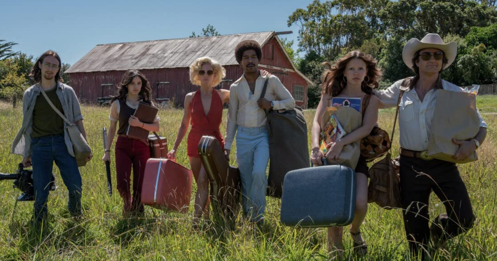
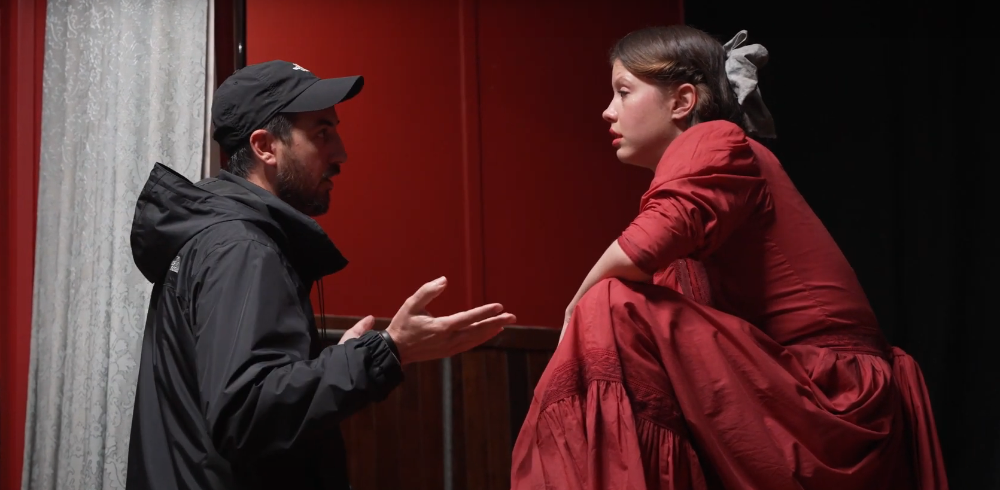
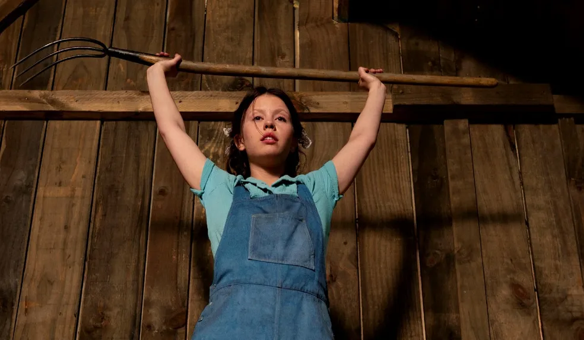
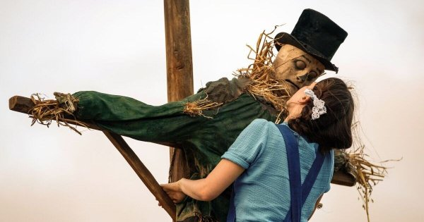
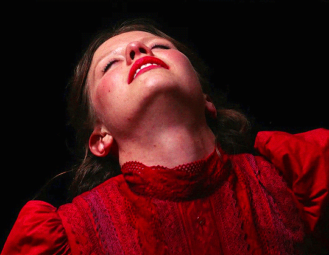
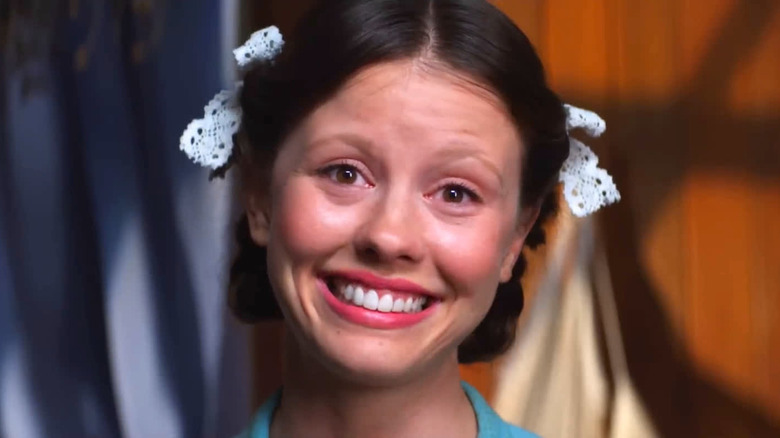

Presa em uma fazenda isolada, Pearl deve cuidar de seu pai doente sob a vigilância de sua mãe. Desejando a vida glamouroso que ela viu nos filmes, as tentações e repressões de Pearl colidem.

Com a estreia de "X: A Marca da Morte", dirigido por Ti West, no cenário cinematográfico, um slasher que evoca o estilo dos anos 80 enquanto permanece atual, seu destaque já é evidente. O filme explora o passado de uma das personagens que atormentou o grupo de atores em "X", concentrando-se em Pearl, uma jovem aprisionada na fazenda de seus pais, aguardando o retorno de seu noivo da guerra, enquanto sonha com uma carreira de atriz.

O que torna esta experiência única, mesmo dentro do gênero de terror, é a forma como o diretor abraça os clichês de maneira sutil, sem torná-los óbvios, enquanto mantém narrativas distintas. Ti West demonstra habilidade ao criar composições visuais que enriquecem a personagem e sua relação com o ambiente. Mia Goth, em alta após outros projetos, fecha essa trilogia chamada Maxxine de forma notável.

Após elogios por seu trabalho em "Infinity Pool", Mia oferece uma performance digna de reconhecimento em "Pearl." Sua personagem é psicologicamente complexa, tornando-se uma figura cativante e imponente para os espectadores. A narrativa, diferente de "X" e seu slasher, é mais lenta, focando na evolução de uma mente já fraturada desde o início, em vez de meramente contar corpos.

A narrativa aborda temas como a pandemia da época, que amplifica a solidão e o isolamento social, e a repressão sexual, que desencadeia os distúrbios psicológicos de Pearl, resultando em uma trama perturbadoramente intrigante e ocasionalmente bizarra e cômica. Além disso, um destaque é o monólogo impressionante de Mia Goth, que oferece uma atuação melancólica e envolvente. A ambientação clara e colorida, apesar de ser um filme de terror, cria uma atmosfera enganosamente tranquila, lembrando elementos de "Midsommar – O Mal Não Espera à Noite" (2019).

Pearl" concentra-se na jornada autodestrutiva de uma jovem que perde a sanidade diante da realidade e dos sonhos inalcançáveis. Mia Goth oferece uma performance poderosa ao interpretar dois personagens distintos na franquia, destacando sua versatilidade.

O filme brilha em seu segundo ato com cenas sangrentas para os apaixonados em slasher, enquanto incorpora toques de humor e oscilações emocionais da protagonista, criando uma mistura única entre horror e humor ácido. Embora não traga elementos completamente novos em relação a "X: A Marca da Morte", "Pearl" é um exemplo meticulosamente executado de horror conceitual, proporcionando uma experiência singular enquanto a jovem enfrenta sua pior versão.